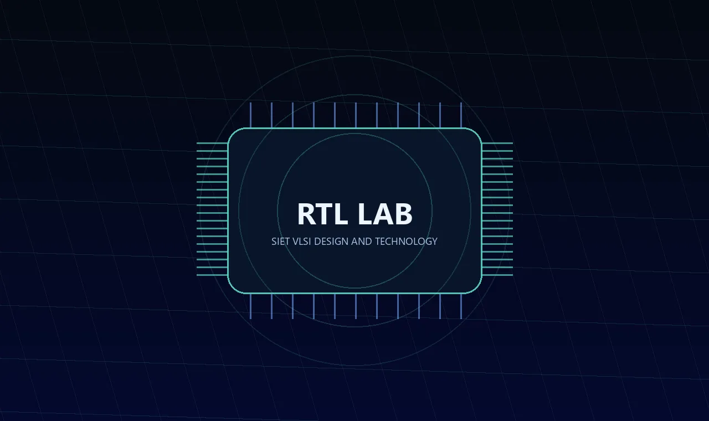
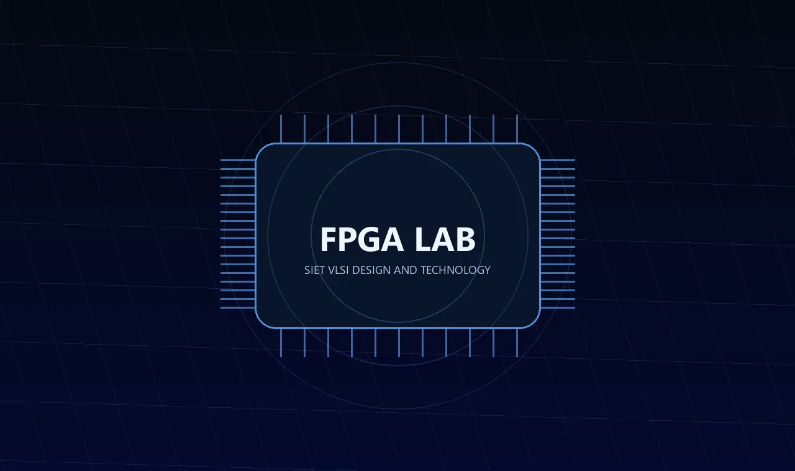
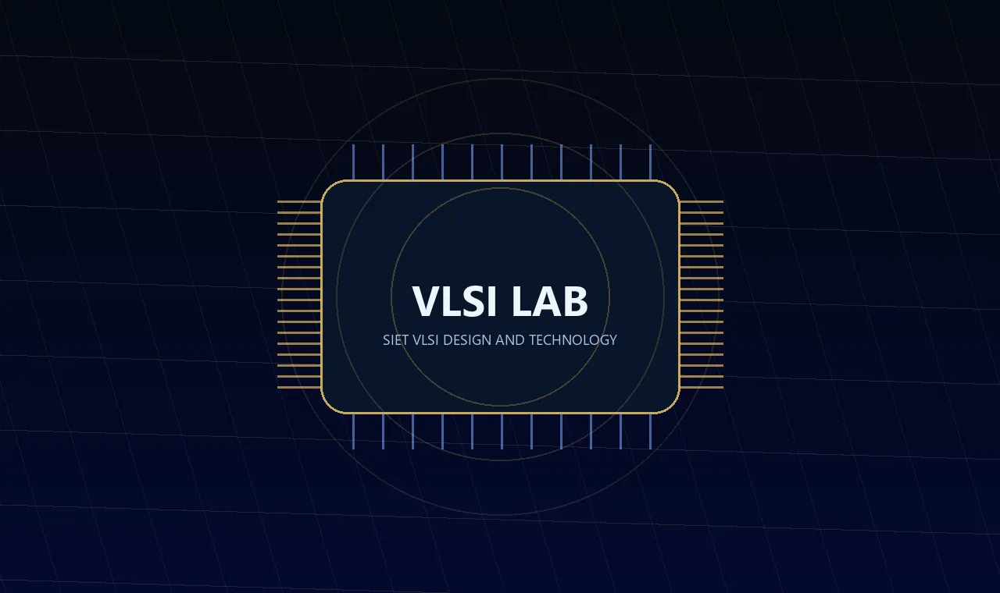
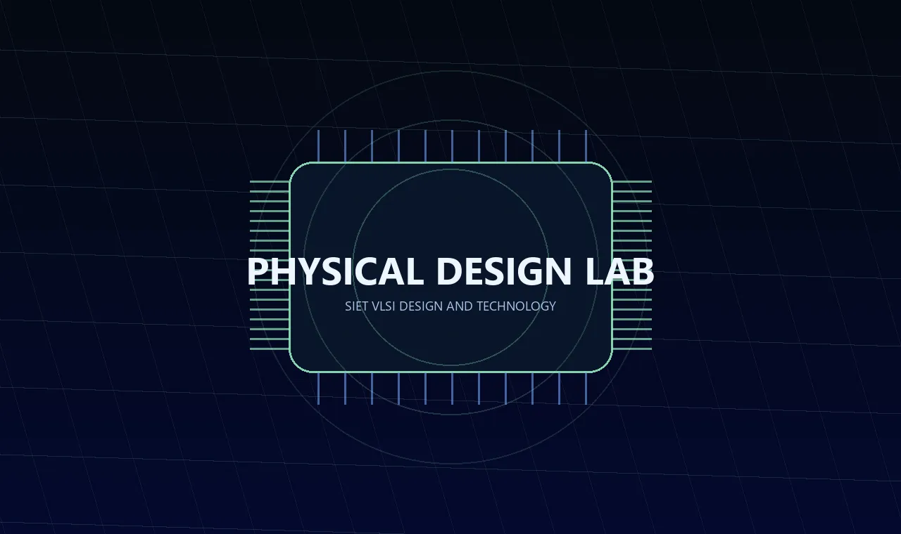
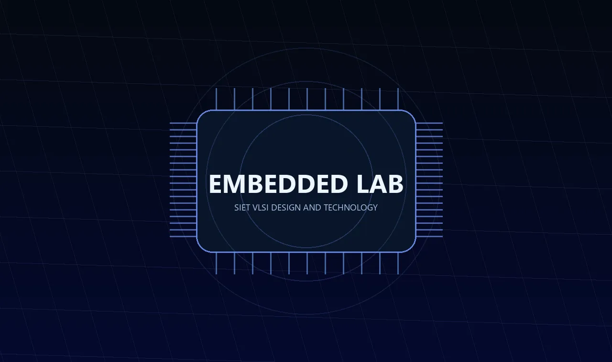
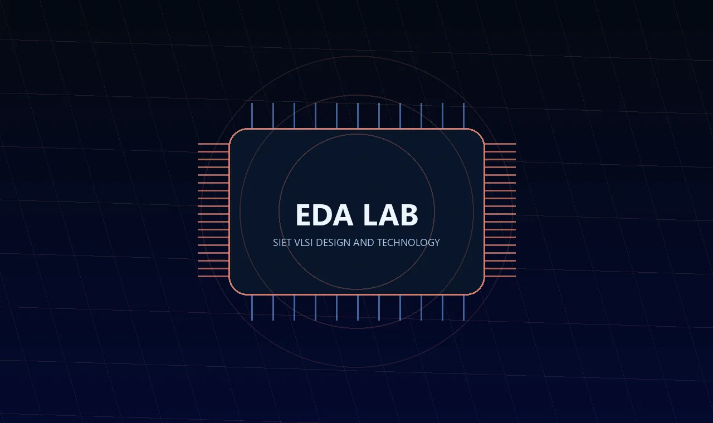

Hands-on Learning
Labs and Facilities
Professional workflows and practice spaces for semiconductor learning.
Labs and Facilities
Professional workflows for hands-on semiconductor learning.
RTL, FPGA, VLSI, Physical Design, Embedded, and EDA spaces support structured experiments, projects, and design practice.

Department Faculty Team
RTL Lab
Focused on disciplined register-transfer-level design, testbenches, simulation, and reusable digital microarchitecture.
- Software Used
- Verilog HDL, SystemVerilog, ModelSim, GTKWave
- Systems
- Professional workstations for HDL coding, simulation, and waveform analysis.
- Specifications
- HDL design flow, Simulation and debug, Reusable module practice

Department Faculty Team
FPGA Lab
Students convert HDL into working hardware prototypes and validate designs on programmable logic platforms.
- Software Used
- Intel Quartus, Xilinx Vivado, ModelSim, Board support packages
- Systems
- FPGA development boards, digital trainer kits, and lab workstations.
- Specifications
- FPGA prototyping, Timing-aware implementation, Hardware validation

Dr. Dhilipkumar Panneer Selvam
VLSI Lab
A core environment for semiconductor design learning, analysis, verification, and chip-design workflow exposure.
- Software Used
- Cadence, Synopsys, SPICE flow, Linux EDA environment
- Systems
- Industry-oriented workstations configured for semiconductor design practice.
- Specifications
- Digital and analog VLSI, Verification exposure, Tape-out flow awareness

Department Faculty Team
Physical Design Lab
Built for implementation-oriented learning from synthesized netlists to physical design closure awareness.
- Software Used
- Synopsys flow, Cadence flow, Static Timing Analysis, Layout viewers
- Systems
- Workstations for floorplanning, placement, routing, timing, and sign-off practice.
- Specifications
- Floorplanning, Place and route, STA and sign-off basics

Department Faculty Team
Embedded Lab
Connects chip-design thinking with real-world embedded systems, intelligent devices, and product prototypes.
- Software Used
- Embedded C, Arduino IDE, Keil, Python
- Systems
- Microcontroller kits, embedded boards, sensors, and hardware-software integration benches.
- Specifications
- Microcontroller programming, Sensor interfacing, Hardware-software co-design

Department Faculty Team
EDA Lab
A tools-first space where students learn professional design automation habits used across semiconductor teams.
- Software Used
- Cadence, Synopsys, Siemens EDA, Open-source EDA tools
- Systems
- Linux-based lab machines for EDA workflows, scripting, verification, and design automation.
- Specifications
- EDA tool practice, Automation scripting, Design verification support